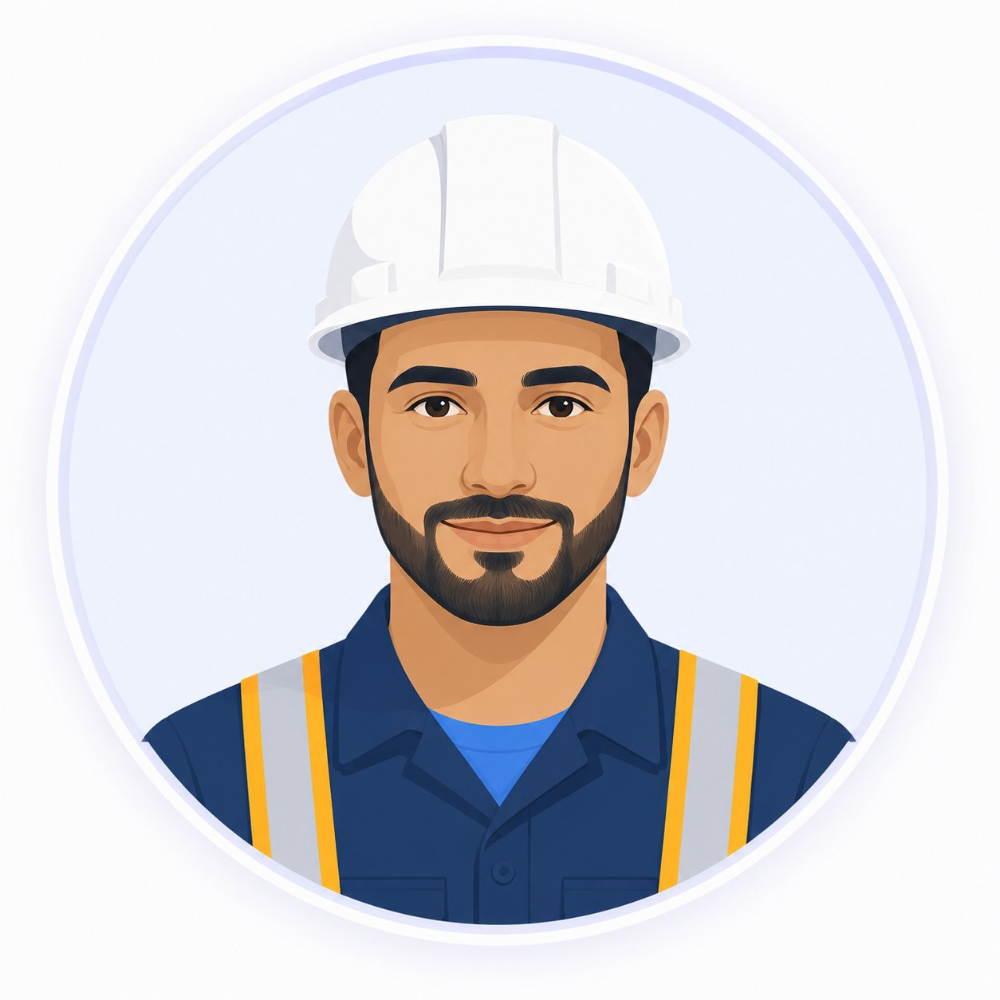

Learning Hub uses enterprise-specific and industry-specific knowledge to build role-based learning paths, close competency gaps, and drive measurable role readiness. Every training result feeds back into the knowledge base.
Generic training programs do not build real operational readiness. Learning Hub personalizes development using your own enterprise knowledge as the benchmark — then captures results back into that knowledge base.
Every role gets a structured competency map derived from your actual job requirements and operational standards. Not generic templates — your enterprise-specific requirements.
Learning Hub identifies exactly where each employee falls short relative to their role requirements — and prioritizes what to address first based on criticality.
Each employee receives an Employee Development Plan based on their specific gaps — not a generic course catalog. Learning is targeted, measurable, and tied to role readiness.
Team leads and managers see role readiness scores, completion progress, and critical gaps across their workforce — with full audit trails for compliance.
When a procedure or standard updates in Knowledge Hub, related learning content and competency maps update automatically. Your training stays aligned with current operations.
Track who has completed what, when, and to what standard. Generate compliance records and certification reports for HSE and regulatory requirements.
Live training is not just a class delivery tool. It captures expert instruction and employee participation as reusable knowledge assets that feed back into Knowledge Hub.
Expert instructor delivers training — field operations, safety procedures, technical skills
Session is automatically transcribed. Key Q&A, demonstrations, and explanations are captured
Transcript translated to standard language for searchability and cross-site access
Employee questions and expert responses are indexed and tagged by topic
Training transcript and outputs become searchable knowledge assets
Content available for future employees, role onboarding, and competency assessments
The result: Expert knowledge that used to be lost after training is now searchable, reusable, and connected to employee development plans. Each session enriches your enterprise knowledge base.
Learning Hub reads from Knowledge Hub — operational standards, procedures, expert transcripts, training outputs, and field records for each role.
Each role is mapped to the enterprise-specific knowledge and skills it requires. Maps are derived from your own documentation — not generic frameworks.
Each employee's knowledge state is assessed against their role map. Gaps are scored by severity so the most critical needs surface first.
Employees receive targeted learning assignments tied to their specific gaps. Content comes directly from the knowledge base — including live training outputs.
Role readiness scores update as employees complete learning. Training results and feedback loop back into Knowledge Hub — enriching it for future use.
A practical story showing how Learning Hub turns role requirements, learning activity, and manager feedback into targeted development actions.

Mohammed begins with a role-based development plan generated from the target role's JD, competence model, and operational standards.
He completes onboarding tasks, technical courses, assessments, and live training sessions. The system captures progress, quiz results, and behavior.
His manager adds feedback on practical gaps, safety priorities, field readiness, and areas that need more hands-on support.
Learning Hub refines his next learning actions, helping him close the specific skill gaps and move toward role readiness.
A standard role-based development plan — useful starting point, but not yet informed by real learning signals.
More targeted development actions based on actual learning results, behavior, and manager feedback — focused on competency gap closure.
Know exactly what to learn next based on their actual role and your operational standards. Training is targeted to close specific gaps — not a generic curriculum.
Track team readiness in real time. Identify who is ready for a new role or assignment, and who needs targeted development before a critical operation.
Move from managing course catalogs to driving measurable readiness outcomes. Prove training investment with clear before/after role readiness data.
Ensure every employee in a safety-critical role has completed required training and can demonstrate competency — with full audit records for regulatory requirements.
See how structured enterprise knowledge supports faster onboarding and more targeted workforce development at scale.
When training materials, operational standards, and project experience are governed and searchable in Knowledge Hub, new employees don't wait for colleagues — they access the right content directly, closing competency gaps through targeted development actions.
See how Learning Hub connects to your organization's enterprise knowledge and delivers measurable role readiness — in weeks, not months.